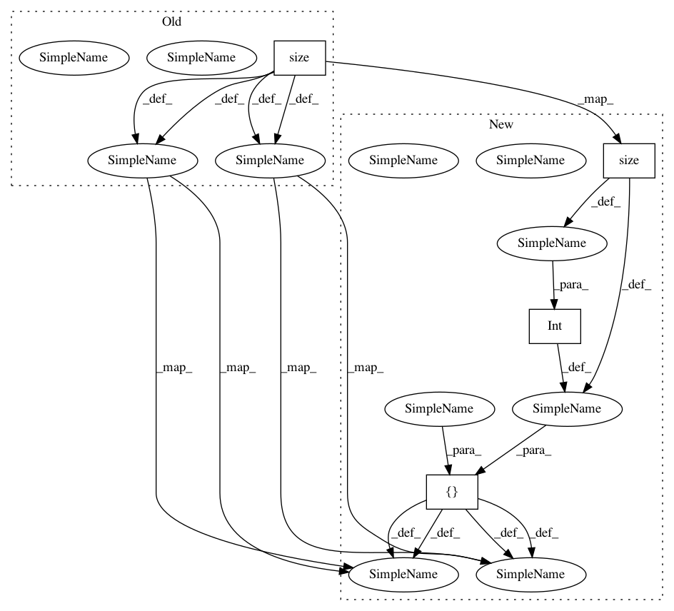

c0b06f1c3eaaab3d98c14590ff0c8a96dba3ebb1,tests/models/senet.py,CifarSEResNet,forward,#CifarSEResNet#,223
Before Change
x = self.layer3(x)
x = self.avgpool(x)
x = x.view(x.size(0), -1)
x = self.fc(x)
return x
After Change
x = self.layer3(x)
x = self.avgpool(x)
x = x.view([int(x.size(0)), -1])
x = self.fc(x)
return x
In pattern: SUPERPATTERN
Frequency: 3
Non-data size: 4
Instances
Project Name: nerox8664/pytorch2keras
Commit Name: c0b06f1c3eaaab3d98c14590ff0c8a96dba3ebb1
Time: 2018-11-24
Author: nerox8664@gmail.com
File Name: tests/models/senet.py
Class Name: CifarSEResNet
Method Name: forward
Project Name: nerox8664/pytorch2keras
Commit Name: c0b06f1c3eaaab3d98c14590ff0c8a96dba3ebb1
Time: 2018-11-24
Author: nerox8664@gmail.com
File Name: tests/models/senet.py
Class Name: CifarSEPreActResNet
Method Name: forward
Project Name: nerox8664/pytorch2keras
Commit Name: ad2100bf40e81c9964b9f4c8a3e5a9dbf5f4efd9
Time: 2018-11-24
Author: nerox8664@gmail.com
File Name: tests/layers/view.py
Class Name: TestView
Method Name: forward